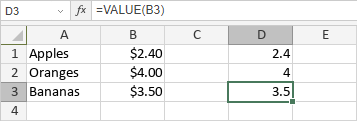

VALUE funkcija
Funkcija VALUE je jedna od funkcija za tekst i podatke. Koristi se za konvertovanje tekstualne vrednosti koja predstavlja broj u broj. Ako konvertovani tekst nije broj, funkcija vraća grešku #VALUE!.
Sintaksa
VALUE(text)
Funkcija VALUE ima sledeći argument:
| Argument | Opis |
|---|---|
| text | Tekstualni podatak koji predstavlja broj. |
Napomene
Kako primeniti funkciju VALUE.
Primeri
Slika ispod prikazuje rezultat koji vraća funkcija VALUE.
